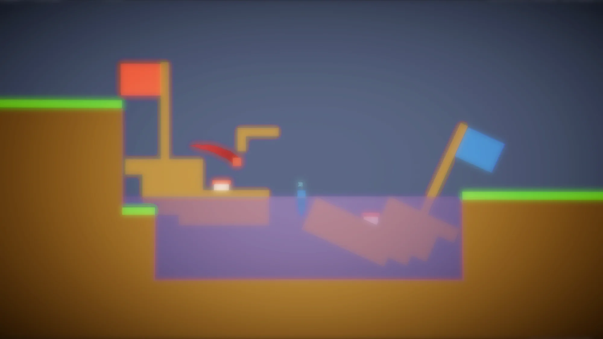
Snag That Flag
An intense 2-player game of reverse tag.
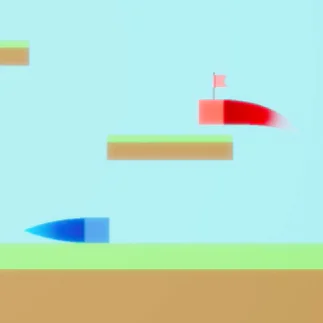

An intense 2-player game of reverse tag.

Public version is currently non-existent. The download link will be available once I make it.
Done
The game is complete. Maintenance and bug fixes may occur occasionally, but no feature-drops are planned.
 Taiwanese Mandarin
Language
Taiwanese Mandarin
Language
While my classmates and I were playing games on the school computer in class, we came across 2 Player TagOpens in new tab. After playing it, I decided to make an advanced version to further cater to our needs. This was how Snag That Flag came to be.
Snag That Flag, at its most fundamental base, is extremely similar to 2 Player Tag. However, I made a lot of improvements, optimisations, and expansions to make it better and unique in its own way.
The original game is a game of classic ol’ tag. The tagger has a floating text “IT” label above the player. When the time is up, the non-tagger player wins. However, in Snag That Flag, this is expanded into 3 distinct modes: Classic, Reverse, and Coin Master.
Classic Mode is the original rule: to win, be the one holding the flag when the timer expires.
Reverse Mode is the opposite of Classic. Win by not owning the flag when the time runs out.
Coin Master Mode, a special mode where players collect coins that randomly spawn in the map. This game mode only applies to Category B and C Maps. The player with the flag can earn 50% more coins bonus during end results of each round.
Local (same computer) multiplayer only.
Left, Red
Right, Blue
| Win Mode | Crown | Criteria |
|---|---|---|
| Perfect Victory | Colourful | When the opponent has 0 points and the winner has at least 1 point. |
| Win | Golden | When the winner scores at least 80% of the total. |
| Nose Out | Silver | When the winner scores less than 80% of the total. |
| Tie | (no crown) | When both players have the same score. |
There are currently 5 presets available, and we also support loading custom ones.
| Name | Description |
|---|---|
| Previous | The previous custom settings. Only visible if one has been made before. |
| Flag Sniper | The default setting. |
| Speedrun | Modified from the previous setting, Flag Sniper. The only difference is the level duration, which is 10 seconds. |
| Entrepreneur | The recommended setting when playing with the Coin Master Game Mode. |
| Square Chasing | Play in enormous maps. |
Click “複製資料夾位址 (Copy Folder Path)”.
Paste the copied path into your file explorer and go back a folder (Presets).
Copy the file PreviousSettings.json and paste it into the folder named Custom.
Return to the game and hit “重新整理 (Refresh)”. Your custom preset should be loaded.
If none of the presets appeal to you, you may try customising the settings by yourself.
| Title | Name | Function |
|---|---|---|
| Game Mode | Classic | Refer to section Goal. |
| Reverse | Refer to section Goal. | |
| Coin Master | Refer to section Goal. | |
| Map Selection | All / None | Enable / Disable all maps in the category. |
| Up / Down | Two pages, Up and Down. “Up” contains Category A Maps, while “Down” contains Category B and C Maps. Note that when Coin Master mode is selected, Category A Maps are always disabled. | |
| Level Settings | Level Length | Duration of every level. Ranges from 10 to 60 seconds. |
| Player Settings | Move Speed | Speed of both players. Ranges from 1x to 1.5x. A speed boost of 1.2x is always applied to the player with the flag. |
| Continuous Jumping | The player can jump in the air “n-1” times if this setting is set to “n”. | |
| Bounciness | A boolean. 0 means disabled, 1 means enabled. | |
| Time Orb Settings | Spawn Rate | The spawn rate of the time orb in Category B and C Maps. The range is 0% to 100%. This setting is also used on spawning coins during Coin Master mode. |
| Affected Seconds | The seconds affected each time a Time Orb is collected. Refer to section Collectibles, Time Orb for details. This setting is disabled when Coin Master mode is selected. |
Unlike the original game, Snag That Flag introduces active collectibles to alter match tempo.
| Debut | Item | Description |
|---|---|---|
| Release 1091107 | Time Orb | Affects the remaining time when collected. The flag-holder would want the level to end quicker, and the one without would not. Therefore time is reduced when the flag-holder collects the time orb and vice versa. The seconds to add/reduce could be set in settings. Only appears in Category B and C Maps. To prevent stalling, the game enforces a maximum time cap per round. |
| Release 1100222 | Coin | Collect to increase the amount of coins. Only spawns in Category B and C maps in Coin Master mode. |
| L5: Water Level II | Faucet | Changes the water level. |
| L8: Reverse | Reverse Orb | Inverts the horizontal controls of all players until the next collection of this orb. |
| L9: Boss 1 | Bullet | The player is stunned, as in, all controls disabled, for 3 seconds upon collection. Was exclusively in L9: Boss Level only, but after the release 1120311, it now spawns with a very low chance in every Category B and C Map. |
| L14: Elevator | Swap Orb | Swaps the position of the players with each other. |
| Random Teleport Orb | Teleports the player to a random place of the upper-half of the map upon collection. Only shows up on the lower-half of the map. | |
| L15: Square | Boost Orb | Grants the player a temporary boost effect to either their speed or jump height. |
| Debut | Item | Description |
|---|---|---|
| L2: Pirateship Level I | Spring Pad | Bounces the player high up. Originally exclusive, now appears in many other maps. |
| Sail | The colour of the sail indicates the currently leading player. Exclusive to Pirateship-themed maps. | |
| L3: Water Level I | Water | Click the jump button to “swim up.” Exclusive to Water-themed maps. |
| Floating Wood | Sinks depending on how many players are on top of it. Exclusive to Water-themed maps. | |
| L4: Teleporting Level I | Teleporter | Teleports the player to its corresponding exit. Exclusive to Teleporting-themed maps. |
| L7: Stairs | Top and Bottom Boundaries | The stairs in the map rise up and the player has to keep moving down. The behaviour after touching the boundaries varies. For the flag holder, it switches the flag ownership to the opponent; for the non-flag holder, it deducts time equivalent to 2 Time Orbs. |
| Boss 2 | Laser | The behaviour after touching the laser is identical to the top and bottom boundaries of L7: Stairs. |
| Lava | Lava | Rises and recedes from the base to the middle of the mountain. Once a player falls into lava, they are teleported back to the mountain peak. |
There are currently 15 maps in the game. They are categorised into type A, B, and C maps. The order below is identical to the in-game order, while the L# in the name is the order of the added time.
These are the initial maps. They do not have Time Orbs and are not available in Coin Master mode.
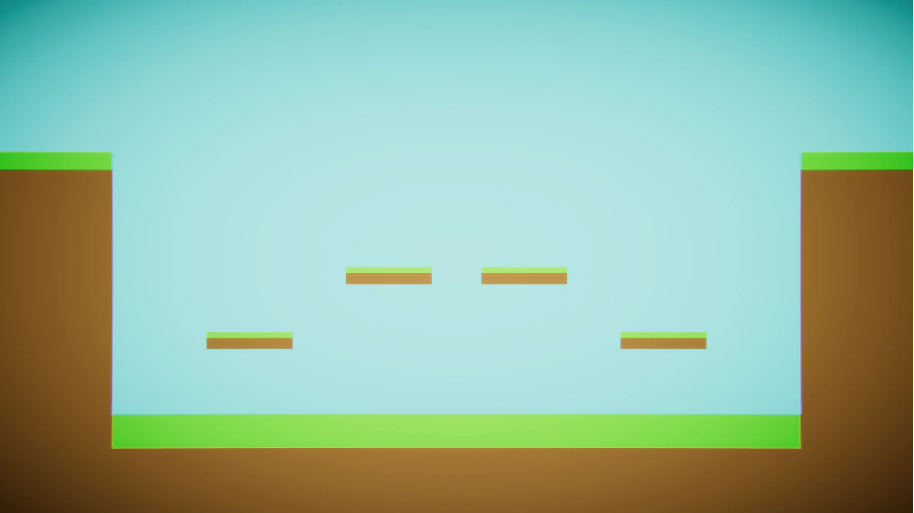
Source
Adaptation
Added
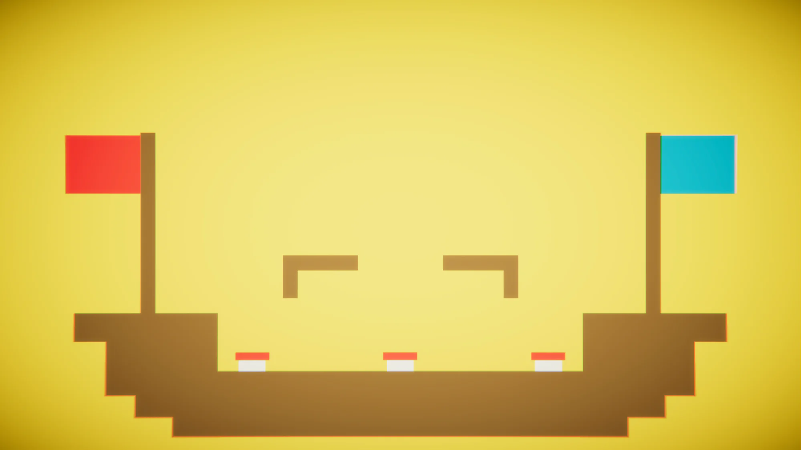
Source
Adaptation
Added
Features
Spring Pad (new), Sail (new)
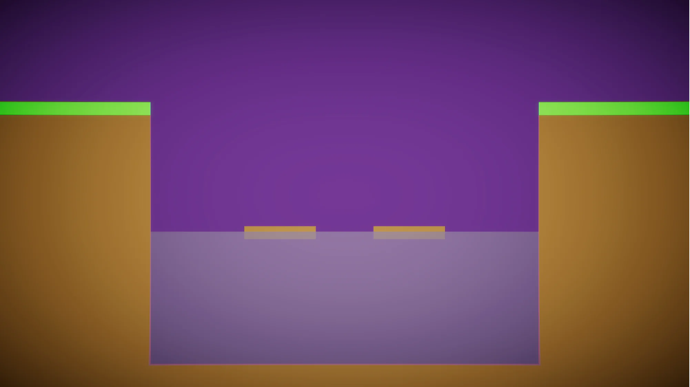
Source
Adaptation
Added
Features
Water (new), Floating Wood (new)
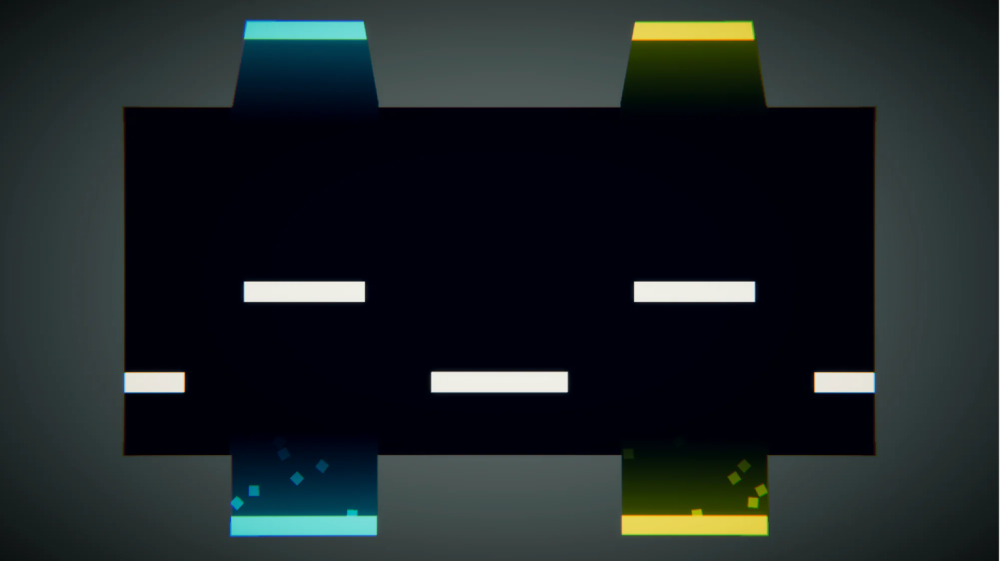
Source
Adaptation
Added
Features
Teleporter (new)
Fun Fact
In 2PT, this map is light grey themed. In STF, we kept the palette as a tribute. However, during release 1120321, where all the thumbnails were re-created, it got updated to the actual in-game theme. This applies to its variant, L6: Teleporting Level II, as well.
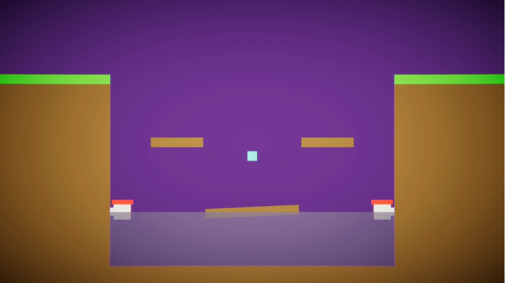
Source
Variant of L3: Water Level I
Added
Features
Spring Pad, Water, Floating Wood, Faucet (new), Rotating Floor (new)
Fun Fact
Featured in the game boot-up background artwork. The first level to introduce the collectible mechanic. The first level to showcase interactive environment objects.
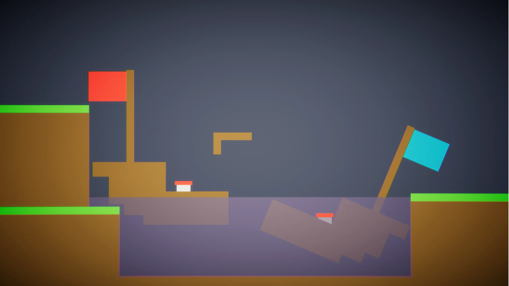
Source
Original
Added
Features
Spring Pad, Sail, Moving Floor
Fun Fact
Featured in the main menu background artwork. The first asymmetrical map.
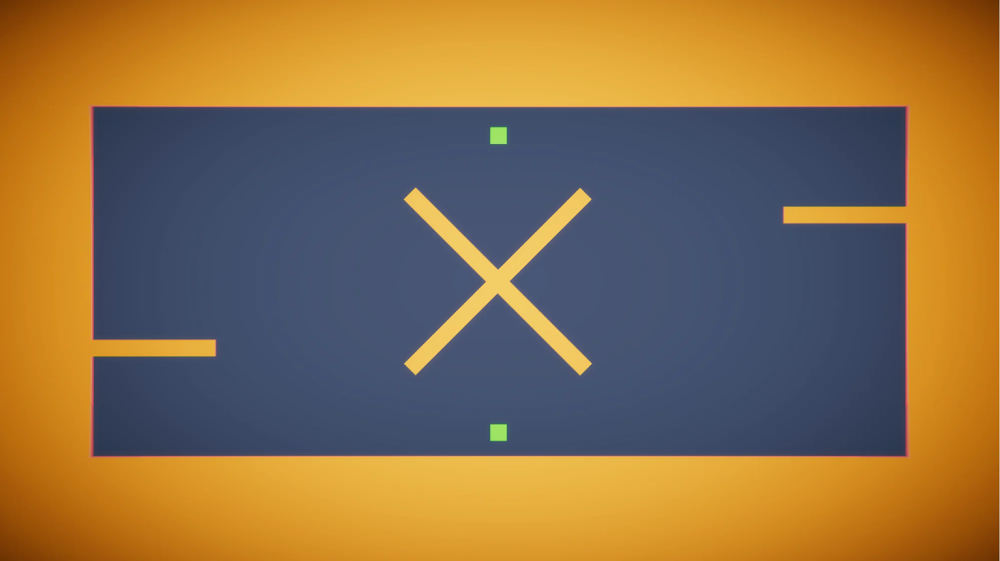
Source
Original
Added
Features
Moving Floor, Rotating Floor, Reverse Orb (new)
Fun Fact
A Category B level prior to the 1120321 release.
These maps unlock more potentials of the game mechanics and map features.
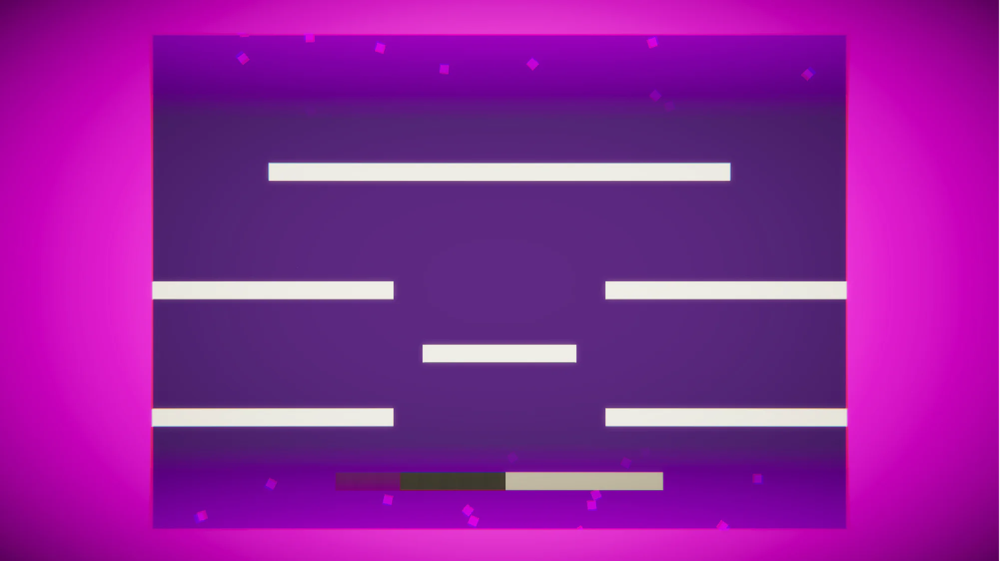
Source
Inspired by NS Shaft
Added
Features
Horizontal Rotating Floor, Top and Bottom Boundaries (new)
Fun Fact
The first ever Category B map to be added to the game. The first ever pseudo-infinite-and-random-generation platform map.
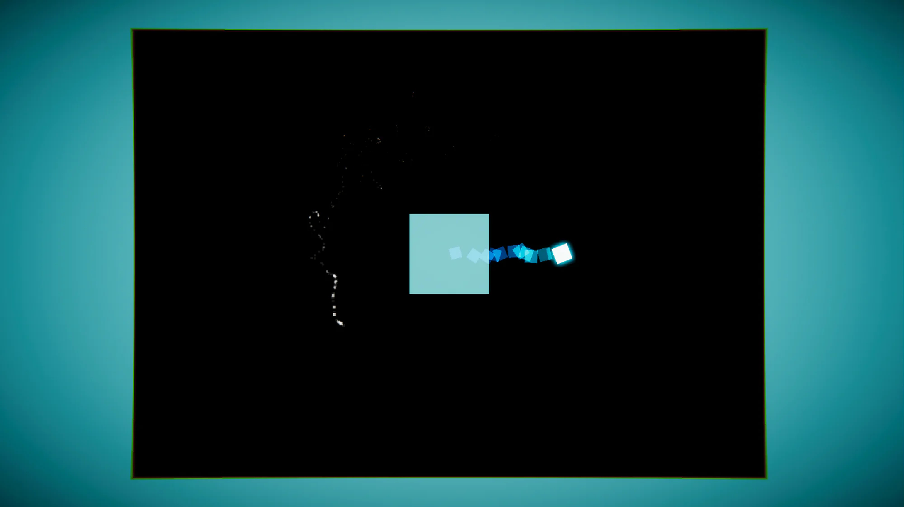
Source
Original
Added
Features
Bullet (new)
Fun Fact
There is no gravity in this map, and therefore the players float. The boss generates Time Orbs (or Coins in Coin Master mode) and shoots bullets.
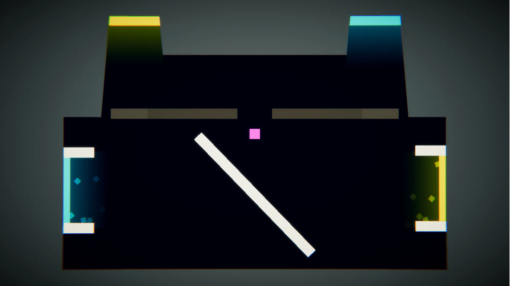
Source
Variant of L4: Teleporting Level I
Added
Features
Teleporter, Rotating Floor, Horizontal Rotating Floor (new)
Fun Fact
A Category A level prior to the 1120321 release.
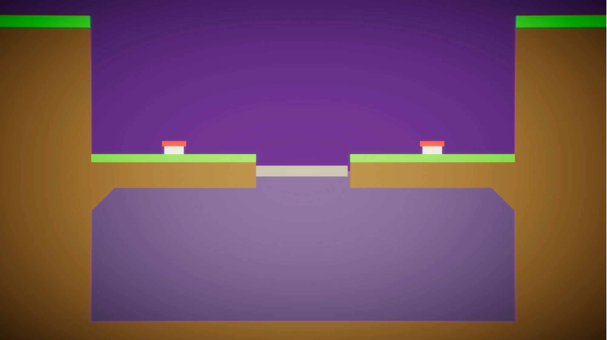
Source
Original
Added
Features
Spring Pad, Water
Fun Fact
A door in the centre opens and closes periodically, separating the map into 2 isolated parts.
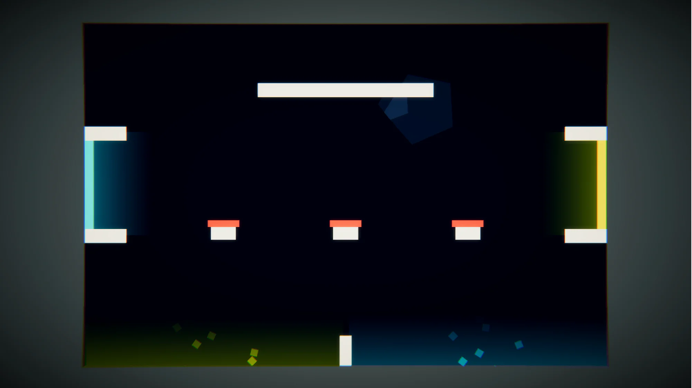
Source
Original
Added
Features
Spring Pad, Teleporter, Moving Floor
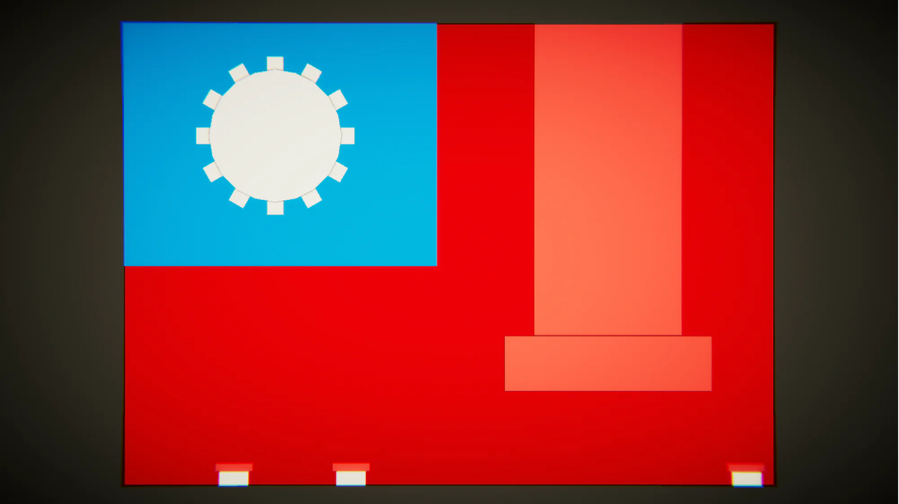
Source
Original
Added
Features
Spring Pad, Water, Moving Floor, Rotating Floor
Fun Fact
The map is modeled after the national flag of the Republic of China, using Water as the blue sky and gear-like rotating platforms to form the sun and its rays. This is also the first and only non-water-themed map to feature the Water.
These maps are bigger compared to the standard sizes, and more collectibles can spawn.
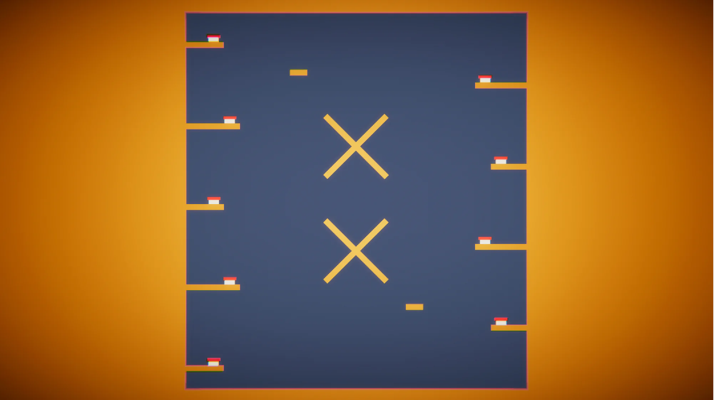
Source
Variant of L8: Reverse
Added
Features
Spring Pad, Moving Floor, Swap Orb (new), Random Teleport Orb (new)
Fun Fact
The first Category C map to be added. The height of this map is twice that of the others, making it the highest in the game until release 1100316, where it was eclipsed by the next map.
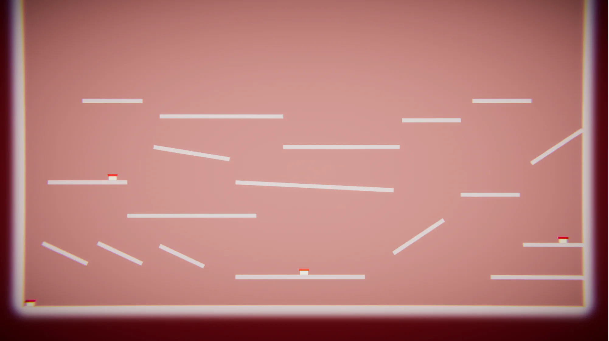
Source
Original
Added
Features
Spring Pad, Swap Orb, Random Teleport Orb, Boost Orb (new)
Fun Fact
Currently the largest map ever.
These legacy maps were removed from the active game due to not being unique or fun enough.
Category
A
Source
Variant of L1: Grass Level I
Added
Removed
Features
Spring Pad, Moving Floor (new)
Category
A
Source
Variant of L2: Pirateship Level I
Added
Removed
Features
Spring Pad, Sail, Moving Floor
Category
B
Source
Original
Added
Removed
Features
Laser (new)
Category
B
Source
Original
Added
Removed
Features
Teleporter
Category
B
Source
Original
Added
Removed
Features
Lava (new)
This project is not my primary focus and I currently lack the time to maintain it actively. However, if opportunity permits later on, I plan to implement some of the features that were proposed in the past, as follows:
The game is currently hard-coded for the school’s computer specs. English translations will also be added.
When trapped in home during the COVID era, I realised this game needed an AI bot to play against with. It should have a single player mode.
There have been numerous requests for true cross-device online multiplayer or even across different platforms, called the Snag That Flag Ultimate (do not call it by the initials). Building netcode from scratch is a massive undertaking, I think a LAN game is more feasible. Players can utilise virtual IP to play across different networks themselves.